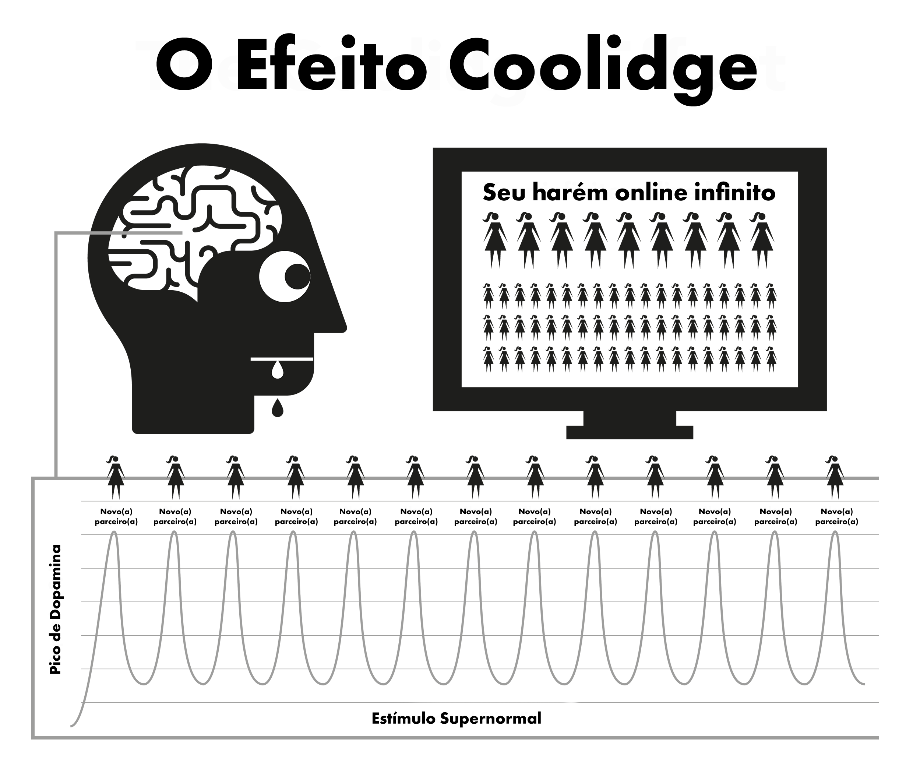

Capítulo 4 Natureza
A pornografia sequestra os mecanismos naturais de recompensa desenvolvidos para te manter reproduzindo sempre que possível. A forma acessível e rápida da pornografia através da internet mantém os mecanismos de recompensa do cérebro produzindo dopamina por significativamente mais tempo do que normalmente seria possível. Cientificamente, isso é chamado de Efeito Coolidge, o qual você já pode ter ficado ciente a seu respeito.
A dopamina é um neurotransmissor associado com sentimentos de desejo, sendo que o prazer é produzido por opioides. Mais dopamina, mais opioides e mais ação. Sem dopamina, ações como comer não são prazerosas, sendo as comidas com mais gordura e açúcar as que produzem uma maior liberação desses químicos.
A dopamina também é liberada em resposta à novidade. Com a aparentemente infinita quantidade de pornografia disponível, isso enche o sistema límbico (sistema de recompensas), então, ao ver pornografia, você reage tendo um orgasmo e engatilhando outra enchente de opioides. Por ser incentivado a obter o máximo de dopamina possível, o cérebro guarda isso como uma rotina para lembrar facilmente e fortalecer as conexões neurais através da liberação de um composto químico chamado DeltaFosB. Agora, o cérebro ativa esses caminhos neurais em respostas a gatilhos como comerciais sexualizados, ficar sozinho, estresse ou até ao se sentir triste e de repente você escorrega pelo “tobogã”. Toda vez que isso é repetido, mais DeltaFosB é liberado e então o tobogã é lubrificado, vivificado e mais fácil de escorregar da próxima vez.
O sistema límbico tem um sistema de autocorreção para podar o número de receptores de dopamina e opioides quando detecta uma enchente diária e frequente de dopamina. Infelizmente, esses receptores são também necessários para nos manter motivados a lidar com os estresses do dia a dia. Quantidades normais de dopamina produzidas por recompensas naturais não se comparam com a pornografia e não são eficientemente absorvidas pelos receptores restantes, levando você a se sentir mais estressado e irritado do que o normal. Esse processo é chamado de dessensibilização.
Nesse ciclo, você cruzou a “linha vermelha” e encadeou emoções como culpa, desgosto, constrangimento, ansiedade e medo, que elevam ainda mais os níveis de dopamina e leva o cérebro a mal interpretar esses sentimentos como excitação sexual.
Conforme o tempo passa, não só o cérebro está dessensibilizado aos vídeos antigos que já viu, mas também a gêneros similares e níveis de choque. Essa diminuição na motivação leva a sentimentos de baixa satisfação enquanto nosso cérebro age, avaliando constantemente, e te levando a buscar por vídeos que satisfaçam a fome. Então você busca por mais e mais novidade, clicando nos vídeos amadores, que induzem um certo choque, na página inicial que você confiantemente disse que não assistiria mais nas suas primeiras visitas.

“Pois no orvalho das pequenas coisas o coração encontra a manhã e se refresca”
— Kahlil Gibran
Um sentimento efêmero de segurança é tudo que precisa para passar por um momento difícil na vida, mas será o seu cérebro dessensibilizado capaz de se desestressar normalmente como o cérebro de um não-usuário?
A enchente de dopamina age como uma droga rápida, caindo rapidamente e induzindo a sintomas de abstinência. Muitos usuários possuem a ilusão de que esses anseios são o terrível trauma que sofrem quando tentam parar ou são forçados. Na verdade, eles são mais mentais, engatilhados pelo usuário se sentir privado do seu prazer, de sua muleta.
4.1 O Monstro Pequeno
A verdadeira abstinência da química gerada pela pornografia é tão sutil que a maioria dos usuários viveram e morreram sem perceber que são viciados nessa droga. Muitos usuários têm medo de drogas, mesmo assim é exatamente isso o que eles são: viciados em droga. Felizmente é uma droga fácil de eliminar, mas primeiro você tem que aceitar que de fato é um viciado. A abstinência da pornografia não causa nenhuma dor física, apenas meramente um sentimento inquieto e vazio, como se tivesse algo faltando, e por isso muitos acreditam ser devido a desejos sexuais. Prolongado, esse sentimento se torna nervosismo, insegurança, agitação, baixa autoconfiança e irritabilidade. É como fome, mas por um veneno.
Dentro de segundos ao começar uma sessão, é fornecida dopamina e a fissura termina, resultando em um sentimento de completude enquanto você desliza pelo “tobogã”. Nos primeiros dias, os sintomas de abstinência e o seu alívio são tão pequenos que não ficamos conscientes dele. Quando nos tornamos usuários regulares, acreditamos ser por gostar da pornografia ou ter o “hábito”. A verdade é que já estamos viciados e não tomamos consciência disso. O /“pequeno monstro” já está em nossos cérebros, então de vez em quando deslizamos no “tobogã” para alimentar ele.
Todos os usuários começam a procurar por pornografia por motivos irracionais. A única razão que qualquer um continua usando a pornografia, seja o usuário casual ou o mais frequente, é para alimentar esse “pequeno monstro”. Todo o dilema consiste em uma série de punições cruéis e confusas, mas talvez o aspecto mais patético dessa situação é a sensação de estar gostando que um usuário tem durante uma sessão, tentando voltar para um estado de paz, tranquilidade e confiança que seus corpos já possuíam antes de se tornarem viciados.
4.2 O Alarme Irritante
Sabe aquele sentimento de quando o alarme do vizinho está tocando o dia inteiro (ou alguma outra pequena irritação persistente), e então o barulho de repente para e aí vem um sentimento maravilhoso de paz e tranquilidade? Isso não é paz, mas o fim de uma irritação. Antes de começar a próxima sessão nossos corpos estão bem, e então começamos a forçar nossos cérebros a enviar dopamina e então, quando terminamos, a dopamina começa a ir embora. Daí sofremos os sintomas de abstinência. Não são sentimentos de dor física, apenas uma sensação de vazio. Nem estamos conscientes de que ela existe, mas é como se fosse uma torneira pingando dentro de nós.
Nossa mente racional não entende, mas não precisa. Tudo que sabemos é que queremos pornografia e quando nos masturbamos a fissura vai embora. Entretanto, a satisfação é fugaz porque, para aliviar o anseio, é necessário mais pornografia. Assim que você atinge o orgasmo, o anseio começa de novo e a armadilha continua a te prender. Um ciclo vicioso, a menos que você o quebre!
A armadilha da pornografia é similar a calçar sapatos apertados só para obter o prazer de tirá-los. Há três razões primárias que fazem o usuário não ver dessa forma.
Desde cedo somos submetidos a uma grande quantidade de lavagem cerebral dizendo que a pornografia da Internet é simplesmente um outro desenvolvimento moderno que substituiu a versão impressa da pornografia. Essa falácia é embalada junto com a verdade de que a masturbação não é prejudicial, então por que você não deveria acreditar neles?
Porque a sensação física da abstinência da dopamina não envolve dor física, mas meramente um sentimento vazio de insegurança, inseparável da fome e do estresse normalmente, esse sentimento resulta em iniciarmos uma sessão de pornografia, uma vez que são nos momentos em que esses sentimentos surgem que costumamos consumi-la. Nós acabamos vendo esse sentimento como algo normal.
Entretanto, a razão primária da falha dos usuários em ver a pornografia como ela é, é por causa do seu funcionamento de trás para frente. É quando você não está consumindo que você sofre dos sentimentos de vazio. Porque o processo de tornar-se viciado é incrivelmente sutil e gradual no começo, o sentimento de vazio é considerado algo normal e não é atrelado à sessão anterior. A partir do momento em que o navegador é aberto e você começa uma sessão, você obtém um impulso imediato e se torna menos nervoso ou mais relaxado, então a pornografia leva o crédito.
Esse processo reverso, “de trás pra frente”, torna todas as drogas difíceis de serem eliminadas. Imagine o estado de pânico de um viciado em heroína sem heroína; agora imagine a completa alegria de quando ele finalmente enfia a agulha na veia. Quem não é viciado em heroína não sofre desse sentimento de pânico.
A heroína não aliviou o sentimento, ela o causou. Similarmente, os não-usuários não sofrem o sentimento de vazio de precisar de pornografia ou pânico quando estão offline. Não-usuários não entendem como um usuário pode obter prazer de um vídeo bidimensional com sons mudos e proporções corporais anormais. Eventualmente, até mesmo os usuários não conseguem entender.
Falamos sobre a pornografia ser relaxante ou satisfatória, mas como você pode ficar satisfeito a menos que você esteja insatisfeito em primeiro lugar? Um não-usuário não sofre desse estado de insatisfação: ele está completamente relaxado depois de um encontro sem sexo, enquanto o usuário não fica até que ele satisfaça o seu “pequeno monstro”.
4.3 Um prazer ou uma muleta?
Um lembrete importante - o motivo principal dos usuários acharem difícil abandonar o vício é a crença de que estão largando um prazer genuíno ou uma muleta, uma ajuda. É essencial entender que você não está largando absolutamente nada, de forma alguma. A melhor maneira de entender essas sutilizas da armadilha da pornografia é comparando com comer. O hábito de comer regularmente nos faz não sentir forme, somente nos tornando consciente dela se atrasarmos as refeições. Não há dor física, só uma sensação vazia, reconhecida como fome. O processo de satisfazer nossa fome é uma experiência prazerosa.
A pornografia parece ser idêntica, mas não é. Como fome, não há dor física e o sistema de recompensas funciona de forma similar, mas é essa similaridade com comer que engana o usuário, levando-o a acreditar que há um prazer genuíno ou alguma espécie de suporte, de muleta. Apesar de comer e consumir pornografia parecerem similares, na verdade eles são opostos.
Você come para sobreviver e te dar energia, enquanto a pornografia diminui e corta sua motivação.
Comida tem genuinamente um gosto bom e comer é uma experiência prazerosa genuína que desfrutamos na nossa vida. Pornografia envolve autossabotagem dos receptores de dopamina e consequentemente destrói suas chances de lidar com a vida e se sentir feliz.
Comer não cria fome, mas a alivia genuinamente. A primeira sessão da pornografia cria a fissura por dopamina e cada sessão subsequente, longe de aliviar, reforça o sofrimento pelo resto da sua vida.
Comer é um hábito? Se você acha que é, tente quebrá-lo completamente! Descrever comer como um hábito seria como descrever respirar como um hábito: ambos são essenciais para a sobrevivência. É verdade que as pessoas têm o hábito de saciar a fome em diferentes horários com diferentes tipos de comida, mas comer, em si, não é um hábito. Mas o pornô também não. O único motivo do usuário abrir o navegador é para tentar acabar com a sensação vazia que a sessão anterior criou, em tempos diferentes e com gêneros diferentes, que vão escalonando.
Na internet, a pornografia é frequentemente referenciada como um hábito e por conveniência o Método Fácil também se refere ao “hábito”. Entretanto, esteja sempre ciente de que pornografia não é um hábito, é um vício em uma droga! Quando começamos a assistir pornografia, temos que nos forçar a lidar com ela. Antes de notarmos, estamos escalando em pornografias bizarras e chocantes. A emoção está na caçada, não na conquista, com a dopamina rapidamente deixando o corpo depois do orgasmo, explicando o motivo de usuários desejarem atrasar o orgasmo, alternando entre diferentes abas e janelas.
4.4 Atravessando a linha vermelha
Como qualquer outra droga, o corpo tende a desenvolver imunidade aos efeitos dos mesmos clipes antigos. Nosso cérebro quer mais, quer algo novo. Depois de um curto período assistindo o mesmo clipe, ele para de aliviar os sintomas de abstinência que a sessão anterior criou. Há uma luta interna ocorrendo no paraíso da pornografia: você quer se manter no lado seguro da “linha vermelha”, mas seu cérebro está lhe pedindo para clicar no fruto proibido.
Você se sente melhor depois de realizar a sessão de pornografia, mas você está mais nervoso e menos relaxado que alguém que nunca começou, ainda que esteja vivendo no suposto paraíso da pornografia. Essa situação é ainda mais ridícula que calçar sapatos apertados porque, conforme a vida passa, um sentimento cada vez maior de desconforto permanece depois de tirar os sapatos. Os usuários sabem que o pequeno monstro precisa ser alimentado, eles mesmos decidem o tempo, geralmente sendo em quatro tipos de ocasiões ou uma combinação delas. Tédio / Concentração - Dois opostos completos! Estresse / Relaxamento - Dois opostos completos!
Qual droga mágica pode de repente reverter o efeito que tinha minutos atrás? A verdade é que a pornografia nem alivia o tédio e estresse, nem promove concentração e relaxamento. Pense sobre isso, que outros tipos de ocasiões existem em nossas vidas, fora dormir? Se você pensa em diminuir para outros gêneros mais ’realistas’ ou ’suaves’, por favor note que o conteúdo desse livro se aplica a toda pornografia: impressa, webcams, pay-per-view, chat, live, etc. O corpo humano é o objeto mais sofisticado do planeta, mas nenhuma espécie, até mesmo uma ameba ou minhoca, sobrevive sem saber a diferença entre comida e veneno.
Através da seleção natural nossas mentes e corpos desenvolvem técnicas para recompensar ações que multiplicam e sustentam a humanidade. Elas não estão preparadas para um estímulo supranormal que é maior, mais brilhante e ousado que qualquer coisa encontrada na natureza, até mesmo imagens bidimensionais mudas nos fazem ficar excitados, mas olhe repetidamente para a mesma imagem e você não sentirá mais essa excitação. Na vida real, pesos e contrapesos nos fazem fazer outra coisa, mas a pornografia não tem esses limites, fazendo com que você passe a sua vida inteira no seu harém virtual.
É uma falácia que pessoas fracas fisicamente e mentalmente se tornam usuários, sendo os sortudos aqueles que acharam o primeiro encontro com a pornografia repulsivo e se encontram curados para a vida inteira. Alternativamente, eles não estão mentalmente preparados para passar pelo processo de aprendizado severo de luta para se tornarem viciados, medo de serem pegos ou não terem o conhecimento técnico suficiente para mudar as configurações de privacidade do navegador. Talvez a parte mais trágica disso tudo é sobre os jovens que são habilidosos o suficiente para encontrarem materiais e cobrirem seus rastros.
Desfrutar da pornografia é uma ilusão. Pulando de categoria em categoria, meramente mantendo o ’macaco’ da novidade dentro da “linha vermelha” ou categorias “seguras” para conseguir sua dose de dopamina. Como viciados em heroína, tudo que eles estão desfrutando é do ritual de aliviar esses anseios.
4.5 A Dança Em Volta Da Linha Vermelha
Até com os vídeos excitantes, usuários constantemente ensinam a si mesmos a filtrar as partes feias e ruins dos vídeos. Mesmo se for solo, eles ainda focam na parte do corpo que mais lhe agradam. Na verdade, alguns sentem prazer nessa dança que ocorre em volta dessa “linha vermelha”, encontrando desculpas para declarar que eles gostam de gêneros “suaves” e não são viciados ao estímulo supernatural. Mas pergunte a um usuário que acredita que só se masturba para um gênero ou atriz, “Se você não conseguir obter o que você está acostumado a assistir e só puder obter gêneros não seguros, você pararia de se masturbar?”
De forma alguma! Um usuário se masturbaria para qualquer coisa, escalonando gêneros, diferentes orientações sexuais, atrizes parecidas, cenários perigosos, relações chocantes, qualquer coisa para saciar o pequeno monstro. No começo, eles são horríveis, mas com o tempo você aprende a gostar. Usuários procurarão preenchimentos para o vazio depois de terem feito até mesmo sexo na realidade, depois de um longo dia de trabalho, febre, gripe, dores de garganta e até durante visitas hospitalares.
Desfrutamento não tem nada a ver com isso, se é sexo que se quer, não faz sentido usar o notebook para isso. Alguns usuários acham alarmante perceber que são viciados e acreditam que isso fará com que fique mais difícil parar. Na verdade, isso é uma notícia importante por dois motivos.
A razão de continuarmos usando é porque embora saibamos que as desvantagens superam as vantagens, acreditamos que há algo na pornografia que nós gostamos ou que age como uma espécie de apoio. Estamos na ilusão de que depois de pararmos de usar teremos um vazio e algumas situações na nossa vida nunca serão as mesmas. Na verdade, a pornografia não fornece nada, só tira.
Apesar de a Internet ser o gatilho mais forte para a inundação de dopamina relacionada com sexo e novidade, o fato de o vício ser adquirido rapidamente faz com que ele não seja tão profundo nem tão difícil de ser cortado. Os sintomas de retiradas verdadeiros são tão medianos que a maioria dos usuários que viveram e morreram jamais nem notaram que os sofreram.
Por que então a maioria dos usuários acham difícil parar, passando por meses de tortura e gastando o resto da vida inteira lamentando em tempos estranhos? A resposta é a segunda razão: lavagem cerebral. É fácil de lidar com os neurotransmissores do vício, a maioria dos usuários passam dias sem pornografia em viagens de negócios ou a lazer, sem se afetarem pelos sintomas de abstinência. O pequeno monstro está seguro com o conhecimento de que você abrirá o notebook rapidamente após voltar ao seu quarto no hotel. Você consegue sobreviver ao seu detestável cliente e ao seu gerente megalomaníaco, sabendo que a sua dose está lá para que você use quando precisar.
4.6 A Analogia Dos Fumantes
Uma boa analogia é a do fumante. Se eles passarem dez horas do dia sem cigarro eles estariam arrancando os cabelos, mas muitos fumantes compram carros novos e não fumam dentro deles. Muitos visitarão teatros, supermercados, igrejas e o fato de serem impossibilitados de fumar nesses ambientes lhes não causam nenhum problema. Até em trens e aviões não há protestos. Fumantes quase sentem satisfação se alguém ou algo os impedem de fumar.
Usuários automaticamente vão evitar usar pornografia na casa dos parentes, durante reuniões familiares e outros eventos, com pouco ou nenhum desconforto. Na verdade, a maioria dos usuários passam longos tempos de abstinência sem esforço. O pequeno monstro neurológico é fácil de lidar até quando ainda se está viciado. Há milhões de usuários que permanecem usuários casuais a vida inteira e estão tão viciados quanto um usuário pesado. Há ainda usuários pesados que abandonam o vício, mas ocasionalmente dão uma olhadinha, e acabam reforçando o “tobogã” neural para descer por ele na próxima queda de humor.
Como dito anteriormente, o vício em pornografia não é o problema principal. Ele simplesmente atua como um catalisador para manter nossas mentes confusas sobre o verdadeiro problema: lavagem cerebral. Não pense, entretanto, que os efeitos ruins são exagerados, na verdade eles infelizmente são até diminuídos por quem fala. Ocasionalmente circulam rumores de que os caminhos neurais estão lá para a vida toda, e que necessitam apenas que a mistura certa de acaso e estímulo leve os usuários a novamente arruinarem suas vidas, escorregando nesse “tobogã”, mas isso não é verdade.
Nossos cérebros e corpos são máquinas miraculosas, e se recuperam em questão de semanas.
Nunca é tarde para parar! Uma rápida pesquisa em comunidades online lhe mostrará pessoas de todas as idades reiniciando suas vidas e a de seus parceiros. Como com qualquer outra coisa, o ser humano chega até a dar um passo a mais: há pessoas que passam a praticar retenção seminal, Karezza, e a diferenciar o sexo sensorial do propagativo, fazendo seus com que seus parceiros se sintam mais felizes do que antes.
Pode servir de consolação para os usuários pesados que é tão fácil para eles pararem quanto os usuários casuais, e de um certo modo peculiar é até mais fácil. Quanto mais te arrasta para o fundo, melhor o alívio. Quando eu parei eu fui direto para o zero e não tive nenhuma fissura. Na verdade, o processo foi prazeroso até durante o período de abstinência.
Mas primeiro, temos que remover a lavagem cerebral.